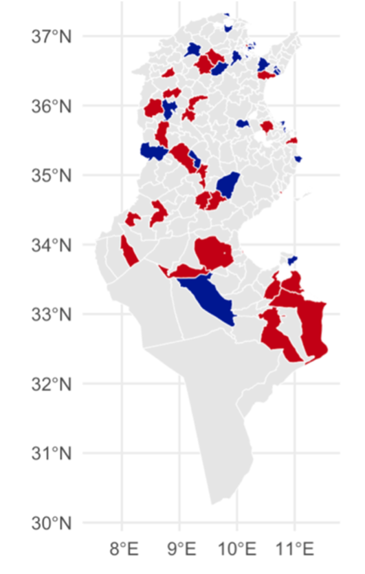

Research Overview
My research focuses on the intersection of political development, education policy, and social mobilization in post-colonial contexts, with a regional emphasis on the Middle East and North Africa.
Dissertation Research
Dissertation Research
Political Cleavage Formation After Independence in Africa and Asia
I argue that secondary education, nearly absent under colonial rule and strategically withheld thereafter, constituted the basis of enduring political divisions. Using geocoded protest events and school-construction records, I show how regimes manipulated educational supply to engineer compliant citizenries and reinforce territorial marginalizations.
Empirical Highlights
- 6,046 schools (1881-2024) in Tunisia at the primary and secondary level
- 1,143 contentious events in Tunisia
- Contentious event data in Morocco, Algeria, Senegal & Cameroon

Colonial era schooling (red) and political Islam (green)
2019 Election vs. Youssefist events: Challenging Islamist and Nasserist candidates thrive in Islamist regions

ACLED Data: 2011 protest locations v. Youssefist districts (red)
Published Work
-
Religious Identification and Political Polarization in Turkey abstractH.E. Ceyhun and Hani Abdel‑Warith • Mediterranean Politics • Forthcoming 2025We study the relationship between political polarization along the Islamist-Secularist cleavage and religiosity in Turkey. We find that political polarization decreases religiosity and that this relationship is robust to various measures of polarization and estimation models. While the effects of polarization are significant throughout Recep Tayyip Erdogan's Justice and Development Party (the AKP) rule, the secularizing impacts of political division have accelerated since 2014. These effects are driven by partisanship: while Secularists have become more distanced from religion, their AKP counterparts have become more religious. Probing alternate mechanisms, we find that polarizing consequences are not driven by age effects, parental pressures, or social media use. We argue that our results reflect social identity dynamics and specifically the increased salience and polarization of 'Secularist' and 'Islamist' identities. This study shows how political polarization can drive social change in developing societies, initiating a short term secularization process.
Working Papers
-
Rebellion and Educational Supply after Colonial Rule: Secondary Education and Civic Licensing in Postcolonial Tunisia Job Market Paper abstractHow do political cleavages form in postcolonial autocracies? I argue that after independence, nondemocratic governments in Africa and Asia leveraged scarce secondary school provision as a tool facilitating regime survival and social control (Svolik 2012; Mattingly 2021). In these states, leaders widely established secondary education as a prerequisite for political participation; selectively supplied schooling became the gateway to access employment within the government administration, to a politically manufactured meritocracy, and to upward mobility more generally. Governments formed territorialized threat perceptions, modally in places with a history of opposition mobilization, and withheld schools from these zones. States thus provided secondary schooling selectively and unevenly across space, concentrating such development in non-threatening and loyalist zones and withholding schools from restive zones. I call this macro-level strategy of uneven reward and punishment, 'civic licensing'. I empirically substantiate this argument using rich evidence from Tunisia. There, experts widely expected the nation's 'peaceful' anticolonial history and budgetary emphasis on education to be latent factors supporting eventual democratization. Instead, the nation's post-2011 transition to Democracy failed. I empirically demonstrate that the Youssefist rebellion (1955-1956) became an enduring basis of political marginalization. Analyses show that Youssefist regions have become critical sites of political entrepreneurship and mobilization, explaining patterns of cleavage-formation and mass mobilization. Youssefist districts are more likely to participate in the 2011 revolution and are more supportive of Islamist Candidates after transitions. A wealth of new data facilitates this district-level analysis including: (1) A spatially disaggregated dataset specifying the locations of the Youssefist rebellion and nationalist contention more broadly (N=1143, 1950-1956) (2) the exhaustive set of primary and secondary schools constructed in Tunisia since the beginning of French protectorate rule (1880-2024) provided by Tunisia's Ministry of education.
-
Religious Infrastructure in Authoritarian Regimes: The Logic of Mosque Provision in MENA Contexts
Works in Progress
- Military Recruitment and Subsequent Mobilization: Evidence from Algeria and the Raj (With Shourya Sen)
- Cross-Border Militancy and Postcolonial Development: FLN Militancy and Development in Tunisia
- The Long-Term Effects of Colonial-Era Tribal Rebellion: Evidence from the High Atlas
- Competing at the Root: How Local-Level Associational Competition Fuels Politics in Hybrid Regimes (With H.E. Ceyhun)